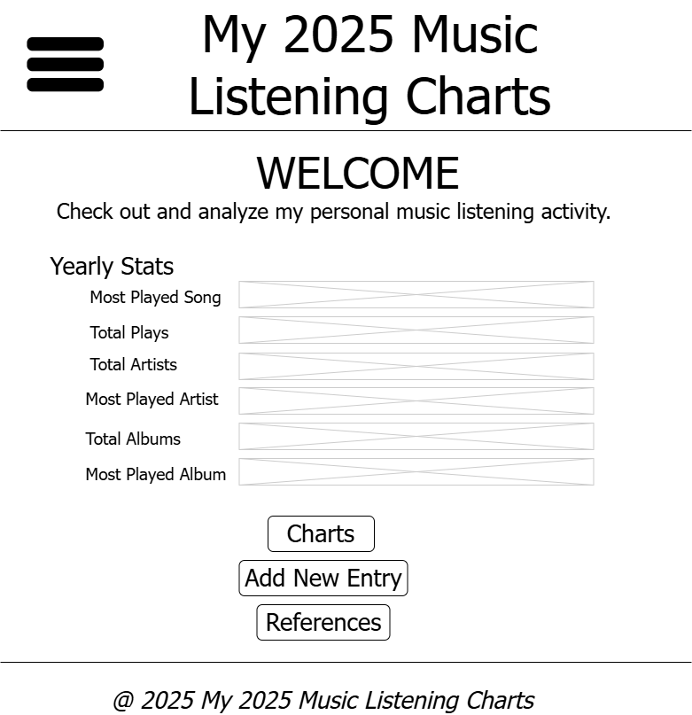

Name: My 2025 Music Listening Charts
This name reflects the purpose of the website—to track and visualize my personal music listening data throughout 2025. It serves as a living record of my top songs, artists, and albums across the year.
Optional domain: my2025charts.netlify.app
The site’s purpose is to showcase my 2025 listening data through interactive charts, rankings, and statistics. Users can view dynamic “Top 10,” “Top 20,” and “Top 100” lists that update automatically as I input new listening records. The site will use JavaScript to read data from JSON files or localStorage, allowing me to add new entries directly on the site.
The website will use a dark mode theme to match modern music platforms.
The site will use clean, modern sans-serif fonts for readability and a digital aesthetic:
The mobile view will feature a simple scroll layout: header → year stats → add form button → footer.
The desktop layout will include a sidebar navigation, a larger chart section, and a stats summary grid.